quotient group acts on the orbital collapse
1. Proposition
Let  be a topological space,
be a topological space,  a topological group and
a topological group and
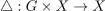
a topological group action. Then for a normal subgroup there exists a canonical, continuous Group Action
there exists a canonical, continuous Group Action
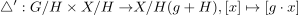
2. Proof
2.1. welldefined
Suppose there exist
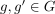
and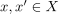
such that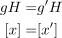
Then there exist
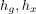
such that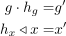
Then we get
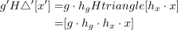
Let
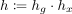
. Since conjugation is a group automorphism and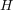
is a normal subgroup, we conclude that there exists an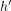
such that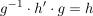
thus
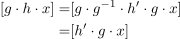
and by construction,
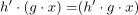
Thus
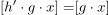
Or equivalently
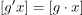
2.2. continuous
By welldefinedness, this diagram commutes
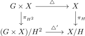
By construction of a quotient topology,
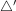
is continuous if and only if $ˆ πH{2} = πH ˆ $ is continuous, where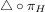
is continuous as composition of continuous maps.Furthermore, by universal property of a quotient topology
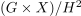
, the (pseudo-)identity from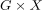
to is continuous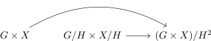